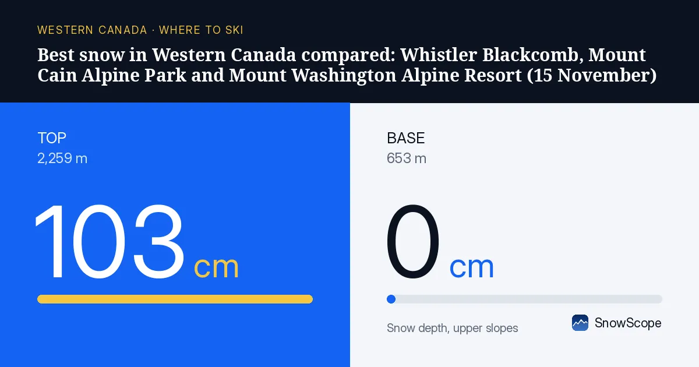

Best snow in Western Canada compared: Whistler Blackcomb, Mount Cain Alpine Park and Mount Washington Alpine Resort (15 November)
Mount Washington Alpine Resort holds the deepest snow at the top: 158 cm. Whistler Blackcomb sits close behind at 138 cm, while Mount Cain Alpine Park's recent storm—66 cm in three days—has built strong cover high up despite being lower overall.
See the live snow forecast for Whistler Blackcomb in the SnowScope appSnow depth, powder alerts and the 3D map, free.
Which height has the best snow right now
At Whistler Blackcomb the snow sits mostly above 1,456 m: the top (2,259 m) holds around 103 cm, the middle slopes (1,456 m) around 48 cm, and the base (653 m) almost nothing. The pattern is clear—go high.
Mount Cain Alpine Park tells a different story. Its recent dump means the top (1,616 m) now has 66 cm, but mid-mountain (1,403 m) is still thin at 23 cm. The base (1,190 m) is marginal at 4 cm.
Mount Washington Alpine Resort shows the most reliable depth: 158 cm at the top (1,569 m), though the base and mid-mountain are both minimal. This resort benefits from staying above the wet-snow line more often.
| Resort | Snow depth | New snow, 72 h | Coming, next days | Top |
|---|---|---|---|---|
| Whistler Blackcomb | 138 cm | 82 cm | 13 cm | 2,259 m |
| Mount Cain Alpine Park | 97 cm | 66 cm | 9 cm | 1,616 m |
| Mount Washington Alpine Resort | 158 cm | 9 cm | 11 cm | 1,569 m |
| Big White | 99 cm | 4 cm | 4 cm | 2,271 m |

Which way the slopes face matters now
On 15 November, Whistler Blackcomb's freezing level swings between 1,040 m and 1,580 m. That means slopes below 1,100 m will see wet snow or slush by afternoon, while north faces above 1,400 m stay winter-like all day.
Mount Cain Alpine Park sits lower overall, so its freezing level (900 m to 1,290 m) leaves the base in the wet zone. Ski the top and north-facing slopes; save south-facing runs for early morning or avoid them.
Mount Washington Alpine Resort's high base (1,081 m) gives it an edge: more terrain stays above the freezing level longer, though both mountains still need you to pick your exposure carefully.
Fresh snow: where it fell hardest
Whistler Blackcomb received the most dramatic new snow: 82 cm landed in the last three days, with 49 cm of that in the 24 hours to 15 November. That's the kind of injection that resets early-season skiing.
Mount Cain Alpine Park got 66 cm in 72 hours, nearly all of it—47 cm—in a single day. The resort sits above much of its region, so this snow stuck and deepened existing cover quickly.
Mount Washington Alpine Resort saw only 8 cm in the last 24 hours and 9 cm over three days. Its advantage is old snow depth, not recent dumping. The map shows steady accumulation, not a storm event.
What comes next: the five-day view
By 18 November, Whistler Blackcomb will add another 13 cm. That keeps it in the conversation. Mount Cain Alpine Park gets 9 cm, and Mount Washington Alpine Resort 11 cm. None of these numbers are huge; the action is behind you, not ahead.
The freezing level drops sharply over the next two days at all three resorts. By 18 November it falls close to or below the base elevations. That means more terrain will consolidate snow and freeze it firm—good news if you like solid spring-like corn, less helpful if you want powder.
Comparing this November to past winters
Mount Cain Alpine Park is running well ahead of normal: at mid-mountain (1,403 m), it has 32 cm today versus a typical 26 cm for 15 November. It sits deeper than 27 of the last 46 Novembers on this date—a rare early-season lead.
Big White shows 11 cm at mid-mountain (1,891 m) today, more than double its 5 cm average for this date. Early snow here is piling up faster than the 30-year trend.
Whistler Blackcomb, by contrast, sits behind its average: 31 cm at mid-mountain (1,456 m) versus a usual 98 cm. The storm helped, but November is still young. The deep snow comes later in the season here.
Tips for skiers
- Ski above 1,400 m at Whistler Blackcomb or the top slopes at Mount Washington Alpine Resort to find the most stable, deepest cover. Avoid the base area entirely.
- North-facing terrain at all three resorts will hold snow best through the warming cycle in the next few days. South-facing slopes are prime early morning only.
- Early-season snow bonds poorly to the ground: expect hidden rocks and grass just under the surface at any resort. Stay on marked, groomed runs unless you have checked for avalanche danger in the official bulletin.
- Mount Cain Alpine Park and Big White often have shorter lift lines than Whistler Blackcomb. The snow they received was similar; your day on the hill may be quieter.
- Before you drive to any resort, check its website for lift openings and terrain availability. Snow depth on the map does not confirm which slopes are prepared.
About these numbers
Resort snow depths are the deepest snow on the resort's upper slopes on the date shown; they are estimates for an area, not a measurement at one point. Forecasts can change. Always read the official avalanche bulletin before going off-piste.
Official avalanche bulletins: Avalanche Canada
Cite this report
For research, teaching or the press: the numbers and charts are free to reuse under CC BY 4.0 with this citation.
SnowScope (2026), Best snow in Western Canada compared: Whistler Blackcomb, Mount Cain Alpine Park and Mount Washington Alpine Resort (15 November), https://snowscope.app/blog/en/2026/11/western-canada-where-to-ski-best-snow-15-november-2026.html, accessed 2026-11-15
SnowScope (Atlas Labs). (2026, November 15). Best snow in Western Canada compared: Whistler Blackcomb, Mount Cain Alpine Park and Mount Washington Alpine Resort (15 November). SnowScope snow reports. https://snowscope.app/blog/en/2026/11/western-canada-where-to-ski-best-snow-15-november-2026.html
BibTeX
@misc{snowscope2026westerncanadawheretoskib,
author = {{SnowScope (Atlas Labs)}},
title = {Best snow in Western Canada compared: Whistler Blackcomb, Mount Cain Alpine Park and Mount Washington Alpine Resort (15 November)},
year = {2026},
month = nov,
howpublished = {\url{https://snowscope.app/blog/en/2026/11/western-canada-where-to-ski-best-snow-15-november-2026.html}},
note = {Published 2026-11-15 19:47 UTC; accessed 2026-11-15}
}· CC BY 4.0 · Methods, data and tools →
Whistler Blackcomb: snow and temperature by height, this winter vs last (tools) →
Follow Whistler Blackcomb
Free: a message when fresh snow is coming, and the forecast every morning.
More snow reports

At Big White on 15 November, the upper slopes hold 68 cm near the summit while the base remains bare; an extreme vertical gradient typical of early season.

Whistler Blackcomb holds 116 cm on the upper slopes as of 12 November, with 83 cm forecast over the next three days. Mount Washington Alpine Resort leads the region at 162 cm.

Mount Washington Alpine Resort has 104 cm on upper slopes today. Whistler Blackcomb leads the region with 136 cm. Data from 18 November 2026.